Raster Calculations in R
Authors
Leah A. Wasser, Megan A. Jones, Zack Brym, Kristina Riemer, Jason Williams, Jeff Hollister, Mike Smorul, Joseph Stachelek
Overview
Teaching: 10 min
Exercises: 0 minQuestions
How to subtract one raster from another and extract pixel values for defined locations.
Objectives
Be able to to perform a subtraction (difference) between two rasters using raster math.
Know how to perform a more efficient subtraction (difference) between two rasters using the raster
overlay()function in R.
Things You’ll Need To Complete This Tutorial
R Skill Level: Intermediate - you’ve got the basics of
Rdown.You will need the most current version of
Rand, preferably,RStudioloaded on your computer to complete this tutorial.Install R Packages
- raster:
install.packages("raster")rgdal:
install.packages("rgdal")- More on Packages in R - Adapted from Software Carpentry.
Data to Download
Additional Resources
We often want to combine values of and perform calculations on rasters to create
a new output raster. This tutorial covers how to subtract one raster from
another using basic raster math and the overlay() function. It also covers how
to extract pixel values from a set of locations - for example a buffer region
around plot locations at a field site.
Raster Calculations in R
We often want to perform calculations on two or more rasters to create a new output raster. For example, if we are interested in mapping the heights of trees across an entire field site, we might want to calculate the difference between the Digital Surface Model (DSM, tops of trees) and the Digital Terrain Model (DTM, ground level). The resulting dataset is referred to as a Canopy Height Model (CHM) and represents the actual height of trees, buildings, etc. with the influence of ground elevation removed.

- Check out more on LiDAR CHM, DTM and DSM in this NEON Data Skills overview tutorial: What is a CHM, DSM and DTM? About Gridded, Raster LiDAR Data.
Load the Data
We will need the raster package to import and perform raster calculations. We
will use the DTM (NEON-DS-Airborne-Remote-Sensing/HARV/DTM/HARV_dtmCrop.tif)
and DSM (NEON-DS-Airborne-Remote-Sensing/HARV/DSM/HARV_dsmCrop.tif) from the
NEON Harvard Forest Field site.
# load raster package
library(raster)
Loading required package: sp
library(rgdal)
rgdal: version: 1.2-8, (SVN revision 663)
Geospatial Data Abstraction Library extensions to R successfully loaded
Loaded GDAL runtime: GDAL 2.2.1, released 2017/06/23
Path to GDAL shared files: /usr/share/gdal/2.2
Loaded PROJ.4 runtime: Rel. 4.9.2, 08 September 2015, [PJ_VERSION: 492]
Path to PROJ.4 shared files: (autodetected)
Linking to sp version: 1.2-5
# view info about the dtm & dsm raster data that we will work with.
GDALinfo("data/NEON-DS-Airborne-Remote-Sensing/HARV/DTM/HARV_dtmCrop.tif")
rows 1367
columns 1697
bands 1
lower left origin.x 731453
lower left origin.y 4712471
res.x 1
res.y 1
ysign -1
oblique.x 0
oblique.y 0
driver GTiff
projection +proj=utm +zone=18 +datum=WGS84 +units=m +no_defs
file data/NEON-DS-Airborne-Remote-Sensing/HARV/DTM/HARV_dtmCrop.tif
apparent band summary:
GDType hasNoDataValue NoDataValue blockSize1 blockSize2
1 Float64 TRUE -9999 1 1697
apparent band statistics:
Bmin Bmax Bmean Bsd
1 304.56 389.82 344.8979 15.86147
Metadata:
AREA_OR_POINT=Area
GDALinfo("data/NEON-DS-Airborne-Remote-Sensing/HARV/DSM/HARV_dsmCrop.tif")
rows 1367
columns 1697
bands 1
lower left origin.x 731453
lower left origin.y 4712471
res.x 1
res.y 1
ysign -1
oblique.x 0
oblique.y 0
driver GTiff
projection +proj=utm +zone=18 +datum=WGS84 +units=m +no_defs
file data/NEON-DS-Airborne-Remote-Sensing/HARV/DSM/HARV_dsmCrop.tif
apparent band summary:
GDType hasNoDataValue NoDataValue blockSize1 blockSize2
1 Float64 TRUE -9999 1 1697
apparent band statistics:
Bmin Bmax Bmean Bsd
1 305.07 416.07 359.8531 17.83169
Metadata:
AREA_OR_POINT=Area
As seen from the geoTiff tags, both rasters have:
- the same CRS,
- the same resolution
- defined minimum and maximum values.
Let’s load the data.
# load the DTM & DSM rasters
DTM_HARV <- raster("data/NEON-DS-Airborne-Remote-Sensing/HARV/DTM/HARV_dtmCrop.tif")
DSM_HARV <- raster("data/NEON-DS-Airborne-Remote-Sensing/HARV/DSM/HARV_dsmCrop.tif")
# create a quick plot of each to see what we're dealing with
plot(DTM_HARV,
main = "Digital Terrain Model \n NEON Harvard Forest Field Site")
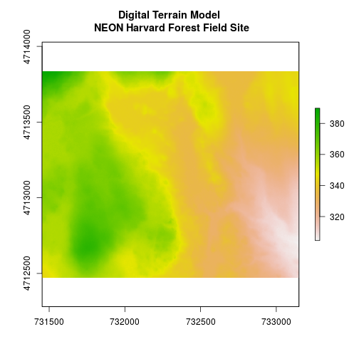
plot(DSM_HARV,
main = "Digital Surface Model \n NEON Harvard Forest Field Site")
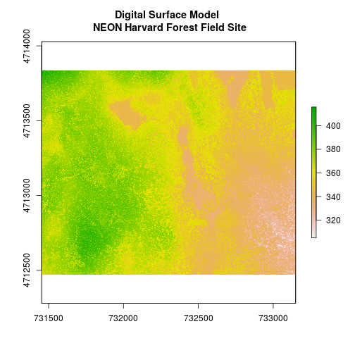
Two Ways to Perform Raster Calculations
We can calculate the difference between two rasters in two different ways:
- by directly subtracting the two rasters in
Rusing raster math
or for more efficient processing - particularly if our rasters are large and/or the calculations we are performing are complex:
- using the
overlay()function.
Raster Math & Canopy Height Models
We can perform raster calculations by simply subtracting (or adding, multiplying, etc) two rasters. In the geospatial world, we call this “raster math”.
Let’s subtract the DTM from the DSM to create a Canopy Height Model.
# Raster math example
CHM_HARV <- DSM_HARV - DTM_HARV
# plot the output CHM
plot(CHM_HARV,
main = "Canopy Height Model - Raster Math Subtract\n NEON Harvard Forest Field Site",
axes = FALSE)
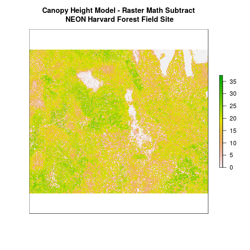
Let’s have a look at the distribution of values in our newly created Canopy Height Model (CHM).
# histogram of CHM_HARV
hist(CHM_HARV,
col = "springgreen4",
main = "Histogram of Canopy Height Model\nNEON Harvard Forest Field Site",
ylab = "Number of Pixels",
xlab = "Tree Height (m) ")
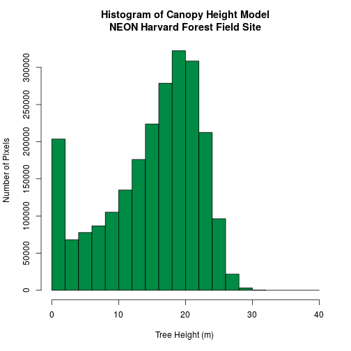
Notice that the range of values for the output CHM is between 0 and 30 meters. Does this make sense for trees in Harvard Forest?
Challenge: Explore CHM Raster Values
It’s often a good idea to explore the range of values in a raster dataset just like we might explore a dataset that we collected in the field.
- What is the min and maximum value for the Harvard Forest Canopy Height Model (
CHM_HARV) that we just created?- What are two ways you can check this range of data in
CHM_HARV?- What is the distribution of all the pixel values in the CHM?
- Plot a histogram with 6 bins instead of the default and change the color of the histogram.
- Plot the
CHM_HARVraster using breaks that make sense for the data. Include an appropriate color palette for the data, plot title and no axes ticks / labels.Answers
# 1) minValue(CHM_HARV)[1] 0maxValue(CHM_HARV)[1] 38.16998# 2) Looks at histogram, minValue(NAME)/maxValue(NAME), NAME and look at values # slot. # 3 hist(CHM_HARV, col = "springgreen4", main = "Histogram of Canopy Height Model\nNEON Harvard Forest Field Site", maxpixels=ncell(CHM_HARV))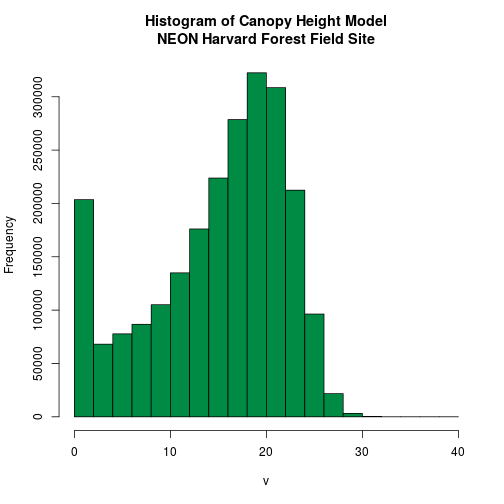
# 4 hist(CHM_HARV, col = "lightgreen", main = "Histogram of Canopy Height Model\nNEON Harvard Forest Field Site", maxpixels=ncell(CHM_HARV), breaks=6)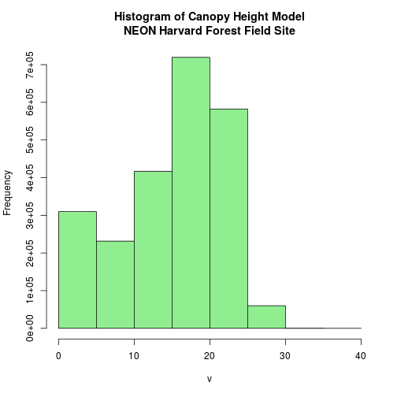
# 5 myCol=terrain.colors(4) plot(CHM_HARV, breaks=c(0, 10, 20, 30), col=myCol, axes=F, main = "Canopy Height Model \nNEON Harvard Forest Field Site")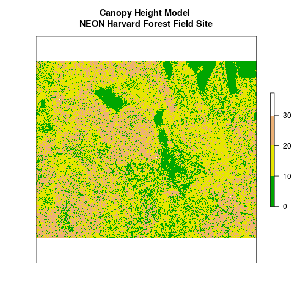
Efficient Raster Calculations: Overlay Function
Raster math, like we just did, is an appropriate approach to raster calculations if:
- The rasters we are using are small in size.
- The calculations we are performing are simple.
However, raster math is a less efficient approach as computation becomes more
complex or as file sizes become large.
The overlay() function is more efficient when:
- The rasters we are using are larger in size.
- The rasters are stored as individual files.
- The computations performed are complex.
The overlay() function takes two or more rasters and applies a function to
them using efficient processing methods. The syntax is
outputRaster <- overlay(raster1, raster2, fun=functionName)
Data Tip
If the rasters are stacked and stored as
RasterStackorRasterBrickobjects inR, then we should usecalc().overlay()will not work on stacked rasters.
Let’s perform the same subtraction calculation that we calculated above using
raster math, using the overlay() function.
CHM_ov_HARV<- overlay(DSM_HARV,
DTM_HARV,
fun=function(r1, r2){return(r1-r2)})
plot(CHM_ov_HARV,
main = "Canopy Height Model - Overlay Subtract\n NEON Harvard Forest Field Site")
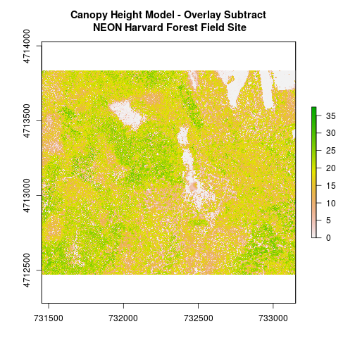
How do the plots of the CHM created with manual raster math and the overlay()
function compare?
Data Tip
A custom function consists of a defined set of commands performed on a input object. Custom functions are particularly useful for tasks that need to be repeated over and over in the code. A simplified syntax for writing a custom function in R is:
functionName <- function(variable1, variable2){WhatYouWantDone, WhatToReturn}
Export a GeoTIFF
Now that we’ve created a new raster, let’s export the data as a GeoTIFF using
the writeRaster() function.
When we write this raster object to a GeoTIFF file we’ll name it
chm_HARV.tiff. This name allows us to quickly remember both what the data
contains (CHM data) and for where (HARVard Forest). The writeRaster() function
by default writes the output file to your working directory unless you specify a
full file path.
# export CHM object to new GeotIFF
writeRaster(CHM_ov_HARV, "chm_HARV.tiff",
format="GTiff", # specify output format - GeoTIFF
overwrite=TRUE, # CAUTION: if this is true, it will overwrite an
# existing file
NAflag=-9999) # set no data value to -9999
writeRaster Options
The function arguments that we used above include:
- format: specify that the format will be
GTifforGeoTiff. - overwrite: If TRUE,
Rwill overwrite any existing file with the same name in the specified directory. USE THIS SETTING WITH CAUTION! - NAflag: set the
geotifftag forNoDataValueto -9999, the National Ecological Observatory Network’s (NEON) standardNoDataValue.
Challenge: Explore the NEON San Joaquin Experimental Range Field Site
Data are often more interesting and powerful when we compare them across various locations. Let’s compare some data collected over Harvard Forest to data collected in Southern California. The NEON San Joaquin Experimental Range (SJER) field site located in Southern California has a very different ecosystem and climate than the NEON Harvard Forest Field Site in Massachusetts.
Import the SJER DSM and DTM raster files and create a Canopy Height Model. Then compare the two sites. Be sure to name your
Robjects and outputs carefully, as follows: objectType_SJER (e.g.DSM_SJER). This will help you keep track of data from different sites!
- Import the DSM and DTM from the SJER directory (if not aready imported in the Plot Raster Data in R tutorial.) Don’t forget to examine the data for
CRS, bad values, etc.- Create a
CHMfrom the two raster layers and check to make sure the data are what you expect.- Plot the
CHMfrom SJER.- Export the SJER CHM as a
GeoTIFF.- Compare the vegetation structure of the Harvard Forest and San Joaquin Experimental Range.
Hint: plotting SJER and HARV data side-by-side is an effective way to compare both datasets!
Answers
# 1. # load the DTM DTM_SJER <- raster("data/NEON-DS-Airborne-Remote-Sensing/SJER/DTM/SJER_dtmCrop.tif") # load the DSM DSM_SJER <- raster("data/NEON-DS-Airborne-Remote-Sensing/SJER/DSM/SJER_dsmCrop.tif") # check CRS, units, etc DTM_SJER DSM_SJER # check values hist(DTM_SJER, maxpixels=ncell(DTM_SJER), main = "Digital Terrain Model - Histogram\n NEON SJER Field Site", col = "slategrey", ylab = "Number of Pixels", xlab = "Elevation (m)")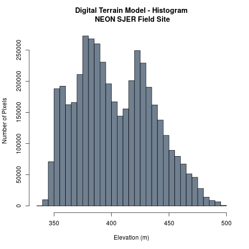
hist(DSM_SJER, maxpixels=ncell(DSM_SJER), main = "Digital Surface Model - Histogram\n NEON SJER Field Site", col = "slategray2", ylab = "Number of Pixels", xlab = "Elevation (m)")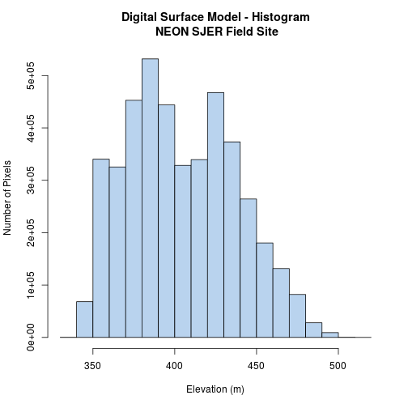
# 2. # use overlay to subtract the two rasters & create CHM CHM_SJER <- overlay(DSM_SJER, DTM_SJER, fun=function(r1, r2){return(r1-r2)}) hist(CHM_SJER, main = "Canopy Height Model - Histogram\n NEON SJER Field Site", col = "springgreen4", ylab = "Number of Pixels", xlab = "Elevation (m)")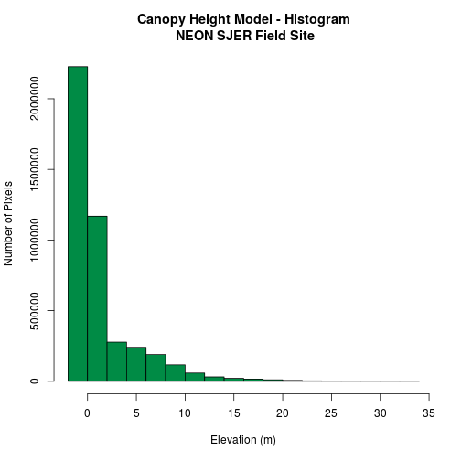
# 3 # plot the output plot(CHM_SJER, main = "Canopy Height Model - Overlay Subtract\n NEON SJER Field Site", axes = FALSE)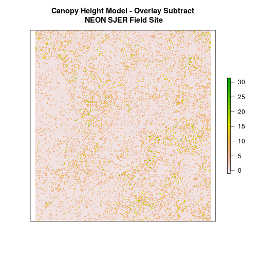
# 4 # Write to object to file writeRaster(CHM_SJER, "chm_ov_SJER.tiff", format = "GTiff", overwrite = TRUE, NAflag = -9999) # 4.Tree heights are much shorter in SJER. # view histogram of HARV again. par(mfcol = c(2, 1)) hist(CHM_HARV, main = "Canopy Height Model - Histogram\nNEON Harvard Forest Field Site", col = "springgreen4", ylab = "Number of Pixels", xlab = "Elevation (m)") hist(CHM_SJER, main = "Canopy Height Model - Histogram\nNEON SJER Field Site", col = "slategrey", ylab = "Number of Pixels", xlab = "Elevation (m)")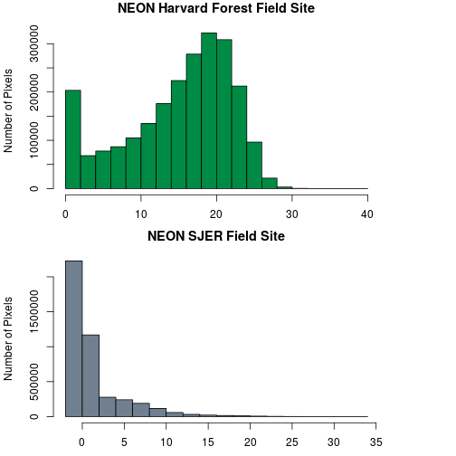
What do these two histograms tell us about the vegetation structure at Harvard and SJER?
Key Points